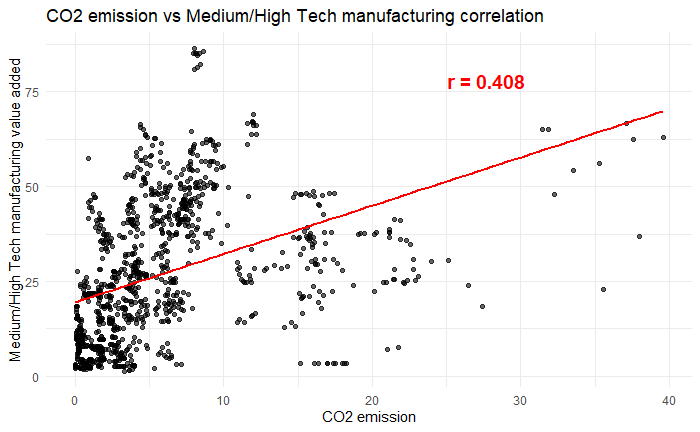

Industrial Manufacturing & Environment
1.1 Research Question
The scope of this research is how industrial manufacturing affects the environment and the drawbacks of developing industrial economies.
1.2 Why this matters today
Today we face an interesting rhetoric about recovering the industrial sector of the Western World. It is claimed that a strong industrial backbone of the economy leads to a more sustainable economic future and security on the global stage.
1.3 Relevance to Social Justice
The race for industrial growth may be either positive or negative for economic prosperity. However, it is important to acknowledge how the economy can affect society.
We have already disrupted our ecosystem and are trying to at least stop damaging it further. Industry inherently relies on waste energy supply and produces many waste products. Industrial manufacturing is a titanic effort of transforming raw materials into meaningful products. This may result in setbacks in humanity’s sustainability goals, potentially stalling or even increasing CO2 emissions and freshwater consumption.
2.1 Data Sources
In this study, we merge three datasets:
- GEM - Global Economic Monitor Data from DataBank.*
- Environment, Social, and Governance (ESG) Data from DataBank.**
- Monthly Electricity Statistics from The International Energy Agency.***
The full data merging and processing details can be inspected here. In brief, we removed all missing variables and countries to create a clean, consistent dataset named megabase3. This dataset ensures that all selected countries have equal representation across all studied series.
- Medium and High-Tech Manufacturing Value Added (% Manufacturing Value Added)
Tracks the year-to-year proportion of added value from manufacturing as a percentage of total GDP.
Quantitative. * - Industrial Production, Constant US$
Measures the total industrial value produced during the year.
Quantitative. * - CO2 Emissions (Metric Tons Per Capita)
Tracks annual CO2 emissions per capita.
Quantitative. ** - Annual Freshwater Withdrawals, Total (% of Internal Resources)
Measures the proportion of internal freshwater withdrawals relative to total available resources.
Quantitative. ** - Total Renewables (Hydro, Geo, Solar, Wind, Other)
Measures total renewable energy production in GWh per year.
Quantitative. **
Our analysis covers data from 2010 to 2020, including a total of n = 112 countries.
2.2 Type of Study
This is an observational study, where we analyze and interpret the available data. We focus on distributions and correlations without experimental manipulation.
2.3 Bias
Bias exists based on personal perception and expectations. For example, assuming China to be an unsustainable industrial country with significant ecological issues or expecting European countries to be highly efficient in their green initiatives.
Additionally, countries may not be fully transparent in their data reporting, and measurement accuracy may vary.
2.4 Lurking Variables
Countries have high variability, possibly even more than human subjects in typical studies. There are numerous external factors that can affect the data, making it difficult to draw definitive conclusions.
3.1 Investigated Variables
Pie chart of renewable energy in GWh per country.(Fig 1)
Bell distribution of renewable energy across the world.(Fig 2)
Manufacturing GDP proportion vs. Freshwater withdrawal correlation.(Fig 3)
CO2 emissions vs. Medium/High-tech manufacturing GDP proportion correlation.(Fig 4)
3.2 Visual Representation of Data

Fig. 1 - Pie Chart: This pie chart shows the share of renewable energy production by country. China has the largest proportion, standing out significantly in comparison to other countries. Its contribution is far above the average, making it an extreme value (outlier) in our dataset.

Fig. 2 - Distribution Analysis: The distribution is right-skewed, indicating the presence of a long tail with extreme values. The largest outlier significantly exceeds the interquartile range (IQR) and is more than 3 standard deviations from the mean.
Fig. 3 - Freshwater vs. Manufacturing GDP: On this chart we are trying to correlate country x bar Annual Manufacturing GDP to x bar Annual Freshwater Withdrawal. Computed r score = 0.053. Indicating there is little to no correlation between those series.
Fig. 4 - CO2 vs. High-Tech Manufacturing: On this chart we are trying to correlate country CO2 to Medium/High-tech manufacturing value added of total GDP. Computed r score = 0.408. Quite an unexpected result, indicating potential association between the series
3.3 Description of Findings
My first concern with the data is that countries are extremely noisy and are not coherent. So, whatever correlation we get, we need to have some high-level view on data.

Fig 3.2
This view illustrates that countries exhibit significant variation in the correlation between freshwater consumption and industrial value as a proportion of GDP. The green areas suggest that industrial growth is likely sustainable, meaning freshwater use is optimized rather than increased.
In the United States, we observe a strong positive correlation, aligning with previous studies showing that industrial growth has not led to higher freshwater consumption—in fact, freshwater use has declined in recent decades, despite moderate industrial expansion.
However, several countries appear in red, indicating a negative correlation. Since industrial decline is rare in our dataset, this suggests that in these cases, freshwater use is increasing disproportionately compared to industrial growth—a sign of inefficiency or unsustainable practices.
The Nordic countries present an exception. Despite their negative correlation, we suspect this results from actual reductions in freshwater consumption, while industrial output continues to grow. This aligns with their highly efficient water management policies, closed-loop industrial processes, and reliance on hydropower.
Given the high variability (noise) in the data, drawing definitive conclusions at a global level is challenging. This lack of a strong overall correlation suggests that the relationship between freshwater use and industrial growth is highly dependent on regional factors such as infrastructure, policy, and technology.
Fig 4.2
Interesting happened on the correlation between medium/high-tech manufacturing correlation to CO2 levels. r = 0.4, which is quite a substantial association. Why? Again, countries are extremely noisy. But we can see China even being the biggest renewable energy producer has one of the most unsustainable technological growth. Idea was that the high-tech industry must actually lower CO2 emission, but we see quite the opposite.
4.1 Discussion on How the Analysis Relates to Social Justice
We can safely conclude that China, even being the biggest industrial manufacturer in the world, makes the most significant efforts towards sustainable energy in absolute values of sheer MGh’s.
World freshwater consumption has no linear relationship to industrial manufacturing. Suggesting relative safety to the environment.
Surprising association of .4 between high-tech manufacturing to CO2 levels. Contradicting general belief of high tech being more sustainable in extracting value. If this is true, we may need to address more closely how FAANG and other similar companies manufacture their products.
4.2 Acknowledgement of the Limitation of the Data and/or Analysis
This study barely scratches the surface of the matter. We have inspected only 5 series. Assessing the total environmental effect of industry only on CO2 and Freshwater consumption is not enough by any means. Furthermore, what industrial manufacturing value consists of could be defined better.
Also, parameter variables are not discussed here, as we have not enough technology to compute ro, mu, P. No generalization is claimed, due absence of randomness and lack of data on the entire population.
4.3 Recommendation for the Future Studies
What would be important is to inspect more closely energy output to energy demand growth. Even if China is producing the most green energy, it consumes the most too.
High-tech manufacturing correlation is very unexpected and puzzling. It would be beneficial to find more metrics for this type of manufacturing and compare if it persists in other environmental metrics.
More inclusive and broad study could generalize these problems to the population (P).